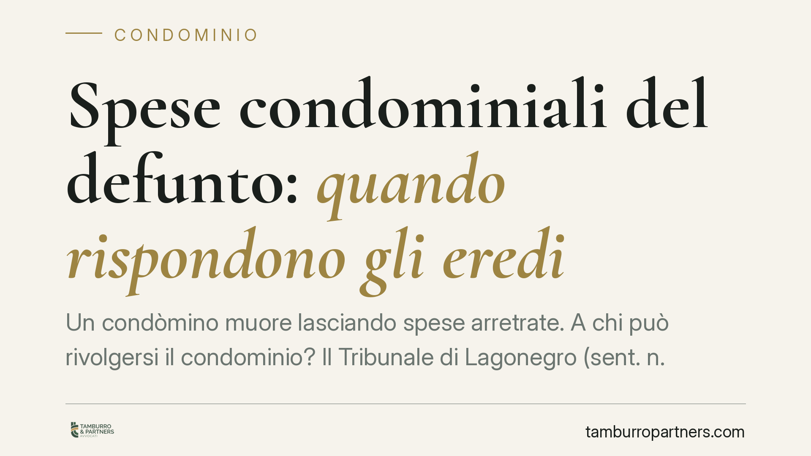

Spese condominiali del defunto: quando rispondono gli eredi
Un condòmino muore lasciando spese arretrate. A chi può rivolgersi il condominio? Il Tribunale di Lagonegro (sent. n. 430/2026) chiarisce che la richiesta è legittima solo verso chi ha effettivamente accettato l'eredità. La dichiarazione di successione, mero adempimento fiscale, non prova nulla. E l'onere di dimostrare l'accettazione grava sul condominio.

Il caso
Un condominio agisce per recuperare le quote non versate da un condòmino deceduto. Individua i chiamati all'eredità e li cita in giudizio, ritenendoli automaticamente responsabili del debito. A sostegno della pretesa, il condominio produce la dichiarazione di successione presentata all'Agenzia delle Entrate.
Il Tribunale di Lagonegro respinge l'impostazione. La responsabilità per i debiti del defunto non nasce dalla semplice chiamata all'eredità, ma dall'accettazione. E quell'accettazione va provata da chi la invoca: nel caso, il condominio.
Inquadramento normativo
Il punto di partenza è l'art. 460 cod. civ., che distingue nettamente due figure: il chiamato all'eredità e l'erede. Il chiamato è colui che è designato a succedere (per legge o per testamento), ma non ha ancora accettato. L'erede, invece, è chi ha accettato e subentra nella posizione patrimoniale del defunto, debiti compresi.
Finché non interviene l'accettazione, il chiamato non risponde dei debiti ereditari con il proprio patrimonio. Può compiere solo atti conservativi e di amministrazione temporanea del patrimonio, senza che ciò equivalga ad accettazione.
La dichiarazione di successione è un adempimento fiscale, richiesto dall'Agenzia delle Entrate per la liquidazione delle imposte. Non ha valore civilistico di accettazione dell'eredità. Il Tribunale lo ribadisce con chiarezza: presentare la dichiarazione, o esservi indicati come chiamati, non trasforma il soggetto in erede.
L'accettazione può essere espressa (con dichiarazione formale) o tacita (quando il chiamato compie un atto che presuppone necessariamente la volontà di accettare, come vendere un bene ereditario). Ma deve trattarsi di comportamenti concludenti, non di meri adempimenti burocratici.
Implicazioni pratiche
Per il condominio la conseguenza è netta: non basta identificare i parenti del defunto e produrre la dichiarazione di successione. Occorre dimostrare che quei soggetti hanno accettato l'eredità, in forma espressa o tacita.
L'onere della prova, secondo il principio generale dell'art. 2697 cod. civ., grava su chi fa valere il diritto. Se il condominio non prova l'accettazione, la domanda viene respinta, con condanna alle spese di lite.
Per i chiamati all'eredità, invece, la sentenza è una tutela: nessuno risponde automaticamente dei debiti del familiare defunto per il solo fatto di esserne parente o di aver presentato la dichiarazione fiscale.
Resta un margine di attenzione. Alcuni comportamenti apparentemente neutri possono configurare accettazione tacita: incassare somme del defunto, disporre dei suoi beni, pagare debiti con denaro ereditario. Chi non intende accettare deve muoversi con cautela e, nei casi dubbi, valutare la rinuncia formale all'eredità o l'accettazione con beneficio d'inventario.
Cosa fare in concreto
- Per l'amministratore di condominio: prima di agire, verifica se i chiamati hanno accettato l'eredità. Raccogli elementi concreti (atti di disposizione dei beni, vendite, incassi) e non affidarti alla sola dichiarazione di successione.
- Consigliamo di richiedere, ove possibile, un'estrazione dai registri delle successioni presso la cancelleria del Tribunale competente, per verificare eventuali rinunce o accettazioni con beneficio d'inventario.
- Per il chiamato che non vuole accettare: evita ogni atto di disposizione dei beni ereditari e valuta la rinuncia formale entro i termini di legge.
- Per il chiamato in dubbio sul passivo ereditario: considera l'accettazione con beneficio d'inventario, che limita la responsabilità ai beni ricevuti.
- In ogni caso: conserva la documentazione relativa alla successione e ai rapporti con il condominio; sarà decisiva in un eventuale contenzioso.
Conclusione
La pronuncia riporta ordine su un equivoco frequente: la successione fiscale non coincide con quella civilistica. Il debito condominiale del defunto non si trasferisce in automatico. Chi vuole recuperarlo deve individuare l'erede vero e provarne l'accettazione. Un onere probatorio che, se trascurato, può far naufragare l'intera azione.
*Contributo informativo a cura di Tamburro & Partners - Avv. Giuseppe Tamburro. Non costituisce parere legale.*
Ogni condominio ha una storia a sé.
Se gestisci un'amministrazione e vuoi un confronto su una specifica questione condominiale, scrivi allo studio. Ti rispondiamo entro un giorno lavorativo.